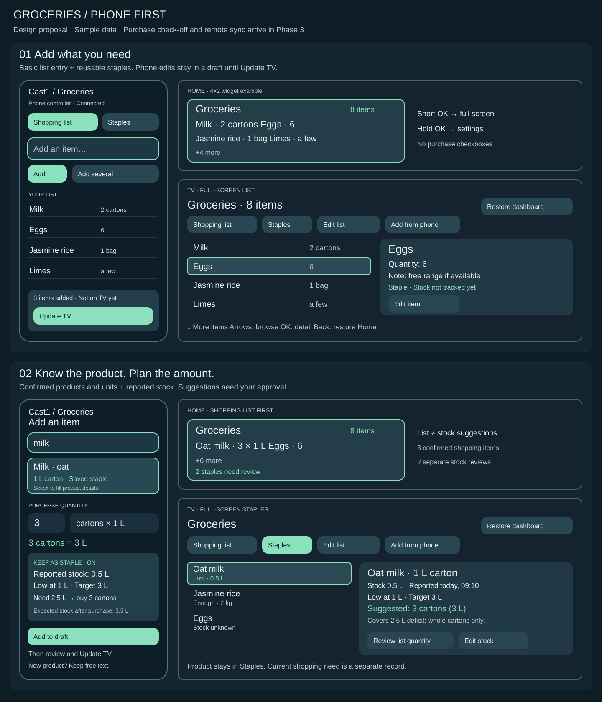
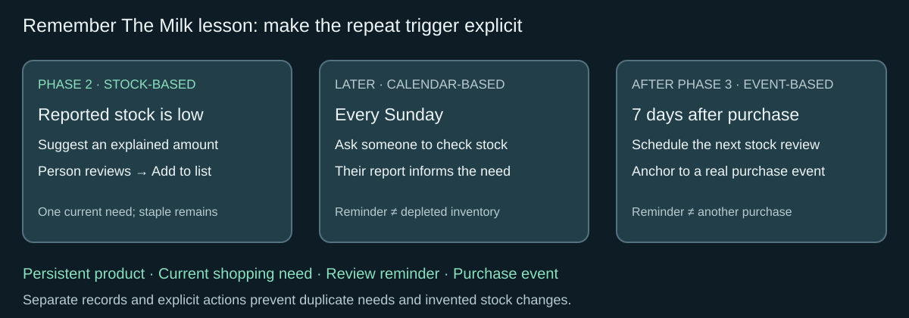
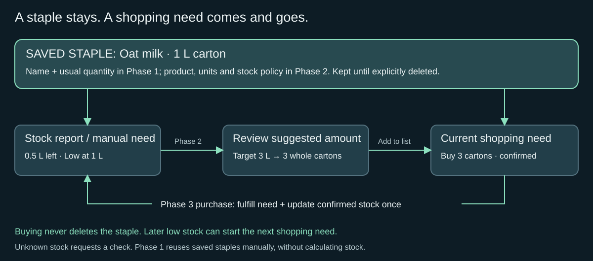
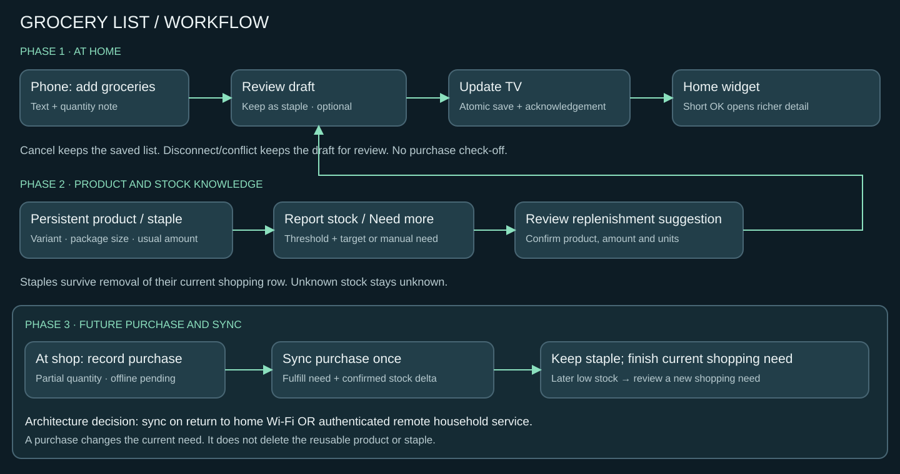

Design proposal · Canonical Markdown plan · Open mockups at full size · Open workflow diagram


Grocery list: phone entry, product knowledge and household staples
Status: Phases 1 and 2 implemented, November 19, 2026, in
.worktrees/grocery-list on feature/grocery-list, separate from main. Container
checks and Cast1 native acceptance passed on debug build 0.1.78. The identical
Cast2 installation was admitted but failed personal-install-in-use; it remains
unconfirmed. Phase 3 remains future work. See the
verification record for exact checks, receipts,
physical captures and remaining acceptance limits. Mockups illustrate the design;
the verification record distinguishes actual implemented behavior and follow-ups.
TL;DR: Phase 1 makes adding groceries from a phone quick and shows the saved list on Homeboard. Phase 2 adds reusable product knowledge, meaningful quantities and stock-aware staples. Phase 3 adds purchase check-off away from home and reliable sync back to the dashboard. A staple remains in the household's catalog after a purchase; its current shopping need is a separate record.
Open the illustrated plan · Phase 1 and Phase 2 mockups · Interaction workflow

Goals and agreed boundaries
- People primarily add items on a phone. The TV is a readable household reminder, with full-screen detail and a secondary remote-entry route.
- Phase 1 is basic list entry. Phase 2 understands products and units. Purchase check-off and synchronization from the shop belong to Phase 3.
- Some products are regularly bought and must remain available even when there is currently enough stock. Buying something and deleting its product record are different actions.
- Build on the Java launcher and current phone-controller pairing, draft, Update TV, revision and Undo behavior. No account or server is needed for Phase 1 or Phase 2. Each TV owns its list initially.
The current phone controller needs a temporary approved session on the home network, with Homeboard open. That supports adding groceries at home; it does not support editing from a shop or automatic Cast1/Cast2 list synchronization. Phase 3 must deliberately add that capability rather than imply it already exists.
Existing-app survey and design decisions
Surveyed official product pages and help documentation on November 19, 2026, after the initial design and first implementation pass. This is a documentation survey, not hands-on testing or a claim that integrations are available. Will identified Out of Milk as a feature-rich reference; it is the primary reference for pantry behavior. No external app, service or account has been selected.
| Reference | Documented pattern | Homeboard decision |
|---|---|---|
| Out of Milk | Separate pantry and shopping lists; pantry items can use Low/Full or numerical quantities with units. Items can be copied from pantry to shopping while remaining in pantry. | Adopt the distinction between what we regularly keep, what we have, and what to buy now. Offer simple Need more / Enough / Unknown first, with optional measured stock. Adding a shopping need keeps the persistent staple. Pantry modes, copy versus move. |
| AnyList | Favorites form a reusable master list; favorites are suggested while typing and preserve saved item details. Separate item details include quantities, package sizes and notes. | Adopt quick entry, explicit Keep as staple, suggestions from confirmed products, and optional details. Reuse must not require re-entering brand/variant or package size. Favorites, item details. |
| OurGroceries | A master list remembers entered items; typing narrows suggestions. Crossing off moves a current item out of the active section without removing it from reusable history. | Adopt identity-based reuse and a clear separation between active needs and retained products. In Phase 3, purchase completion must remain reversible and must not delete the staple. Automatic history of every free-text entry is a possible follow-up, distinct from explicitly saved staples. User guide. |
| Bring! | Fast item entry plus optional quantities/descriptions, variant refinements and categories; descriptions distinguish otherwise similar items. | Adopt progressive detail: a name is sufficient. Keep variants distinct and require confirmation before combining quantities or products. Store/category ordering can follow observed household use. Items and lists. |
| grocy | Product-based inventory, minimum-stock shopping suggestions and purchase tracking; self-hosted with an API. | Use as a reference for explicit stock units and replenishment policies. Keep inventory optional in Homeboard and preserve the quick-list workflow. A grocy adapter is a candidate for a later integration investigation, not a required server. Official overview. |
| Remember The Milk | One-line Smart Add; saved searches as Smart Lists; calendar-based Every… versus completion-based After… recurrence; shared lists and task assignment. | Learn fast capture, filtered views over one underlying record, and explicit repeat triggers. Keep time-based reminders separate from stock-based replenishment. Tour, Smart Lists, repeat semantics. |
The Out of Milk pantry help pages are older documentation (2017–2019); they establish the reference interaction, not present-day platform parity or an API contract. Its feature overview also describes pantry management, quantities, item history, categories, barcode entry and shared lists. Those additional capabilities inform the roadmap; none implies that Homeboard currently supports barcode lookup or remote shared-list sync.
Adopt in Phases 1 and 2
- Phone-first, one-field entry. Keep name-only Add/Enter prominent; reveal quantities, product identity and stock only when the person wants them.
- Reusable staples / pantry. A persistent household item is independent of a shopping row. Enough stock hides its current shopping need, not its identity; until purchase handling exists, removing a row remains an explicit manual edit.
- Simple status or measured stock. People can report Need more, Enough or Unknown without counting grams or milliliters. Quantitative tracking is optional per product, with a report timestamp and explicit units.
- Remember confirmed detail. Product suggestions can reuse names, aliases, brand/variant, normal purchase quantity and known package sizes. Unknown items remain addable immediately.
- Review replenishment. Low-stock suggestions are separate from confirmed shopping needs. Show the deficit, package rounding and expected resulting stock before adding; never duplicate needs during a refresh.
- Preserve user intent. Quantity increases, product merges, deletion and stock corrections require clear actions and reversible drafts. A stock edit alone does not mark a purchase or silently clear someone's shopping row.
Keep for Phase 3 or later
Phase 3 owns shopping-away-from-home use, check-off, partial purchases, offline pending state and household/dashboard synchronization. Later candidates include barcode/product lookup, recent-item history beyond saved products, configurable store/category ordering, prices and product photos. Recipes, coupons and retailer ordering are separate needs to validate; Out of Milk's breadth is a reference, not a requirement to expose all those features in the first form.
Remember The Milk: strengths and what to take
Remember The Milk is a task-management reference rather than a pantry inventory model. Its strongest contribution here is making capture and follow-through easy without requiring the person to open a large editor. The following are Homeboard design judgments informed by its official documentation, not claims that RTM has stock-aware grocery behavior.
| Strength | What Homeboard can learn | Phase and acceptance |
|---|---|---|
| Fast capture with progressive detail. Smart Add accepts several task properties in one line; mobile entry also offers visible shortcuts for people who do not know the syntax. | Preserve the one-field Add/Enter path. Consider optional quantity/category chips when an interpretation is confident, with the interpreted product/amount/unit visible before confirmation. Keep the original text and an ordinary editor available; do not require syntax or silently reinterpret Thai/English names. Smart Add, mobile entry. | Phase 1 fast entry and Phase 2 explicit confirmed fields are current scope. Natural-language parsing is a later enhancement; an ambiguous 2 milk must stay text until confirmed. |
| Useful views over shared records. Smart Lists save search criteria and update as matching tasks change. | Offer named, understandable views such as Need more, Check stock, and Already on shopping list over the same products/needs. A view must not create a second inventory. Any future store/category filters must say what they exclude. Create a Smart List. | Phase 2 follow-up: filtered staple review, without importing a general query language. Changing a status updates view membership; an existing shopping need remains reachable and is never duplicated. |
Two distinct recurrence rules. Every… follows the calendar; After… generates another occurrence after completion. |
Distinguish review stock every Sunday, review again 7 days after purchase, and suggest buying when reported stock is low. A calendar reminder is not evidence of consumption, an actual purchase, or depleted stock. Repeat formats. | Stock thresholds/manual need remain Phase 2. Scheduled review reminders are later work. Completion-relative review belongs after Phase 3 has real purchase events. Test late/missed reviews, purchase reversal and duplicate prevention before enabling recurrence. |
| Shared responsibility and reminders. Lists can be shared with edit/view permissions, tasks assigned, and reminders configured. | A future Who is shopping? assignment and Check stock reminder can support household coordination. Preserve one shopping need; show assignment/sync state instead of copying a row per person or TV. Getting started. | Phase 3 or later: decide household identity, permissions, offline acknowledgements and notification delivery first. Do not add a required account or background alert service to Phases 1/2. |
The key modeling lesson is a persistent product is not a repeating task. A staple can stay visible indefinitely with enough or unknown stock. A shopping need represents a particular decision to buy. A reminder requests a review. An actual purchase is an event. They may reference each other, but checking off a future reminder must not increase stock or fulfill a shopping need.

For a later review-reminder feature, specify calendar schedule versus after
purchase, the relevant time zone, next review time and the event that advances
it. Preserve product identity, usual amount and package knowledge across cycles;
keep purchase-specific notes/history separate. A missed reminder must not create
multiple identical shopping needs. Do not estimate inventory from elapsed time
unless a separately designed, explicit prediction feature is chosen.
This survey expands the design vocabulary and roadmap. It does not expand the currently authorized Phase 1/2 build into a general task manager, scheduled-reminder service or RTM integration. Provider/API availability, authentication, terms and product/unit mapping would need separate verification before any adapter choice.
Shared implementation sequence
Will authorized Phases 1 and 2 together, or sequentially if more efficient. Use one shared list/product/staple model and transaction path in this worktree:
- Persist lists, current needs and reusable products; register compact and richer full-screen presentations and preserve widget restoration.
- Extend the existing phone draft with fast Add/Enter, batch entry, edit/reorder, multiple lists and reusable staples; commit through Update TV with Undo.
- Add confirmed quantities, product/package knowledge, optional stock reports and replenishment review. Use exact decimal arithmetic and matching validation on TV and phone; do not infer consumption.
- Run container model/browser/lint checks and record screenshots, then deploy the identical newly numbered APK to both TVs through the coordinator. Record actual install and foreground acceptance separately. Keep unrelated main-worktree edits out of this feature branch and coordinate a combined deployment when necessary.
Phase 1 — a useful list, fast to add to
Phone: the primary surface
Open the existing named TV controller and tap the Groceries card. The header identifies the TV and list. Keep an Add an item… input and Add action above the ordered draft list. The keyboard's Add/Enter action adds the row, clears the field and keeps the keyboard ready for the next item. Accept Thai, English and mixed text without requiring a catalog selection.
An optional quantity field is plain text, for example 2 cartons, 500 g or a few. It is a human-readable note in this phase, never silently parsed or converted. Row details provide quantity text and a longer note. A new row needs only a nonblank name. Add several accepts one item per line and previews the result before putting the rows in the draft; blank lines are ignored.
Adding changes the phone draft immediately. A persistent summary says, for example, 3 items added · Not on TV yet, beside the existing Update TV action. One update commits the entire reviewed draft and creates one Undo entry. Typing or adding individual rows must not produce repeated TV writes. After a successful acknowledgement, say Saved to Cast1. A lost acknowledgement is Checking update…, not an invitation to create duplicate entries.
People can edit names, quantity text and notes, reorder by drag grip or explicit move actions, and remove a row with draft Undo. There are no checkboxes or Bought actions in Phase 1. The list is maintained manually through editing and removal until Phase 3 introduces purchase semantics. Removal must say Remove from list, never Purchased.
Matching names show a gentle Already on the list — edit it or add another? choice. Case and surrounding whitespace may help find a possible duplicate, but never merge entries automatically: two Milk rows may describe different products. Preserve entered names, punctuation and language. Stable row IDs distinguish them.
TV: glance and richer full screen
Add Groceries through the existing widget picker; do not rearrange the default dashboard. Start with an empty list, not the sample groceries in the mockup. Propose a 4×2 size preset, subject to the current grid and collision checks.
| Surface | Phase 1 content and interaction |
|---|---|
| 1×1 | Basket icon, list name, item count and first item when space permits. |
| Wide one-row | Title/count and a few item names with a clear remaining count. |
| Standard/tall | Ordered names and quantity text; show +N more instead of auto-scrolling. |
| Full screen | Entire scrollable list, full names, quantities and a highlighted-item pane with complete notes. Edit list opens the remote Add item/Edit item fallback; Add from phone and Configure are explicit actions. |
Home focuses the whole widget. Short OK/click opens the existing expansion shell; hold OK opens Configure/Move/Resize/Remove widget. In full screen, Up/Down moves through rows and updates details; Right reaches the detail actions and Left returns to the selected row. OK on a row opens its detail, without changing list data. An explicit Edit item action opens a draft editor with Save/Cancel. Add item uses the same fields and Android's available input method; built-in voice recognition is not a feature requirement.
Add from phone in full screen enters the existing temporary phone-pairing flow, restoring the originating dashboard first so Update TV can proceed once paired. Reuse its TV approval and session lifecycle rather than exposing a permanent unauthenticated list URL. Follow the current controller rule that Update TV waits until the TV leaves an active full-screen interaction; the phone explains Return the TV to Home to update and retains the draft. The Home card refreshes after the acknowledged update.
Back closes nested details/editors first, then restores the original Home page, widget focus and saved size. Restore dashboard is always visible in the expansion and returns directly, resolving any dirty editor with Save/Discard/Keep editing first. Browsing, expansion and restoration create no Undo entries.
Recurring items begin as “Keep as staple”
An optional Keep as staple switch is available in item details. Saving creates a persistent, named staple and links the current shopping row to it. The phone has two clearly labeled views: Shopping list and Staples. A staple remains in Staples if its shopping row is removed. Add to shopping list reuses its saved name and default quantity text; if already listed, open that row instead.
Phase 1 staples are reusable entries, not automatic stock tracking. Show Stock not tracked yet in their details, with no guessed low-stock badge. Deleting a staple is a separate explicit action: explain that any current shopping row is kept as an ordinary item. Removing a widget keeps its list and staples so re-adding can restore them; deleting a list is separate and has Undo. Multiple widget instances can select the same local list by stable ID; separate named lists are independent. Start with one Groceries list; keep list management in Configure rather than requiring it during first use.
Phase 1 empty, failure and limit behavior
An empty TV card says No groceries listed · Add from phone. Full screen also offers Add item; the phone focuses the add field. A blank Staples view explains Keep regularly bought items here to add them again.
Keep saved TV data visible without network access. The phone distinguishes a draft from saved data, preserves pending edits on disconnect and requires fresh approval/conflict checks after reconnecting. Use the current operation receipt and conflict resolution path, never last-writer-wins. Two concurrent edits to the same list require explicit review; independent lists may merge independently. If storage fails, retain the draft and show that saving failed; do not show a saved confirmation. A failed load is List unavailable, not an empty list; never overwrite unreadable data automatically.
Server-validated limits: 32 named lists, 200 rows and 200 saved products per list, and 256 KiB of grocery JSON across all lists, 120 Unicode code points for names, 40 for quantity text and 500 for notes. Explain limits at the relevant input; do not truncate silently. Validate every row before atomic commit. Large lists scroll normally with identity-based focus.
Phase 2 — understand what and how much
Phase 2 keeps the fast free-text path. Product knowledge begins with what the household has entered and confirmed; a global commercial product database or AI service is not a prerequisite. No catalog lookup may prevent adding an unknown item.
Phone: recognize, suggest, confirm
Typing milk can suggest a saved product, such as Milk · oat · 1 L carton, with its usual purchase quantity and staple status. Selecting it fills editable fields; typing a new name still creates a new product. Product details contain:
- Name, optional brand/variant, household-confirmed aliases and optional category.
- Usual purchase quantity and package definition, such as 1 carton contains 1 L.
- Optional staple status, stock tracking choice and replenishment threshold/target.
Distinct brands, sizes and variants remain separate unless a person explicitly merges them with a preview of affected rows and stock records. Suggestions must not turn every item named Milk into the same product. Categories are optional, manually editable grouping aids; changing them does not change quantity or stock.
Quantity entry accepts explicit amount + unit, and an optional package count: 2 cartons × 1 L = 2 L, 500 g, 6 eggs. Show a confirmation chip after parsing and let people edit it. Ambiguous 2 milk stays unstructured until confirmed. Original free text remains available for items that do not fit the model; do not force a false structured interpretation.
| Unit rule | Example and decision |
|---|---|
| Same dimension | 1 kg + 500 g can be displayed as 1.5 kg when the product is the same. Use exact decimal values and explicit conversions. |
| Packaging | 2 cartons becomes 2 L only when that product's carton size is confirmed as 1 L. A carton has no universal size. |
| Count | Eggs may use pieces; 1 dozen = 12 pieces can be an explicit supported count unit. A bag/bunch remains a package without a confirmed content quantity. |
| Different dimensions | Never convert mass to volume without a product-specific, reviewed rule. Phase 2 does not need density conversions. |
| Missing knowledge | Preserve 2 packs as packages with unknown content; explain what information is missing rather than inventing grams. |
When a matching product is already listed, offer Increase quantity only if the quantities are compatible; preview the resulting total before commit. Otherwise offer a separate row or edit. Keep brand/variant and unit identity in the decision.
Staples: inventory is separate from shopping demand
Each staple chooses Manual need or Track quantity. The first allows Enough / Need more / Unknown, without claiming an exact stock count. The second records an explicit amount in a compatible base unit, plus a low-stock threshold and a desired stock target. A person updates stock from the phone; there is no automatic inference that elapsed days imply consumption.
Example: oat milk comes in 1 L cartons; reported stock is 0.5 L, the threshold is 1 L, and the target is 3 L. Recommend 3 cartons to cover a 2.5 L deficit, showing the expected 3.5 L after that purchase. Threshold means at or below; round upward only in whole-package mode. Loose goods can use their supported purchase increment. Targets must exceed thresholds; negative stock and invalid or incompatible units block saving with a field-level explanation.
Show a phone Needs review section for low-stock/Need more staples. Its Add to list action confirms the proposed quantity and creates or updates one linked shopping need. In Phase 2 low stock suggests a need; it does not silently append groceries every time the dashboard refreshes. Existing listed quantities are shown before any replacement or increase. A later stock correction marks a linked need for review rather than silently removing a manually confirmed row.
Every stock value shows Reported [date/time]. Unknown stock stays unknown; allow Check stock reminders and explicit manual entry. Show the report age instead of an arbitrary claim that stock is still accurate. Until Phase 3, manually adjusting stock does not imply a purchase transaction or erase a list row.
TV: more information without more friction
The compact card prioritizes the current shopping list and counts only confirmed shopping rows. Expanded Staples provides stock review. The mockup also explores a secondary 2 staples need review line, separate from 8 items on list; this compact stock summary and a standalone Staples display choice remain follow-up layout work. Unconfirmed suggestions must never count as shopping rows.
Full screen has Shopping list / Staples tabs. The shopping detail adds the selected product, brand/variant, package size, quantity breakdown and notes. The staple detail adds reported stock and its timestamp, threshold, target and a human-readable explanation of the proposed purchase. All records remain reachable regardless of compact size. Add to list and Edit stock are explicit phone draft actions. The native remote editor is the basic names/quantity-text/notes fallback; product, packaging and stock-policy configuration uses the phone controller. Back/Restore/focus follow Phase 1's expansion contract. There is still no purchase check-off in this phase.
Phase 3 — purchase at the shop and sync home
This is the future behavior boundary, not a delivery commitment for Phase 1/2:
- Take a phone-accessible list away from the TV; check off an actual purchase, including partial amounts and a changed package size. Phone feedback distinguishes Saved on this phone · Waiting to sync from Synced to dashboard.
- Store a purchase event with a unique operation ID. Applying it removes/reduces the current need, optionally increases tracked stock by the confirmed purchased amount, and keeps the staple/product record. Retrying must not double stock.
- A bought staple moves out of the active shopping list when fulfilled but remains in Staples. New low stock or Need more later starts the next shopping need; the old purchase stays in history. Buying does not permanently pin a checked row among things still needed.
- Handle offline edits, concurrent additions/quantity changes, purchase reversal, conflicts and delayed TV connectivity. Undoing a purchase reverses that event's effect without overwriting later stock corrections or someone else's purchase.
Before implementation, choose between local-first phone storage with sync on return to the home network and an authenticated shared service for remote sync. The former cannot update the TV live from the shop. The latter needs a deliberate household identity, device enrollment and storage/service decision. Evaluate existing shopping services only when a service is selected; do not invent provider capabilities or install a custom bridge for the early phases. Cross-TV household sharing belongs in that decision too. The TV must not need to keep its temporary configuration editor running as an always-on public server.
Data and implementation design

| Record | Responsibility |
|---|---|
| GroceryList | Stable ID, title, ordered shopping-row IDs, staple IDs and revision. |
| ShoppingItem | Stable ID, product/staple link if any, entered label, quantity text/structured quantity, note and explicit order. Represents a current need. |
| Staple | Stable ID, reusable product/default quantity and, in Phase 2, manual need or stock policy. Persists independently of the current need. |
| Product (Phase 2) | Stable ID, confirmed name/aliases/variant/category, quantity dimension and package definitions. Package sizes belong to this product. |
| Stock report (Phase 2) | Product/staple identity, reported amount/unit or qualitative state, timestamp and revision. It is a report, not an inferred consumption rate. |
| Purchase event (Phase 3) | Unique operation ID, need/product references, actual quantities, effects and acknowledgement/sync state. |
| Widget settings | List reference and display choice; geometry belongs to HomeLayout. Two views of one list share data, not duplicate inventories. |
Keep content in the existing atomic configuration transaction and revision/Undo boundary, with widget settings referencing list IDs. A phone update must not restore an old list snapshot over later TV edits. Extend aggregate snapshots and composite Undo to include groceries. Removing a widget preserves list records; an explicit list deletion cannot leave dangling widget references. Apply deletion and affected widget choices atomically with Undo. Do not store pairing credentials in list data.
Use native Java compact/expanded views and one controller/model per list. Reuse
WidgetExpansion restoration/lifecycle and the phone editor's approved session,
draft recovery, operation receipts and conflict UI. Data mutations share one path
whether initiated by TV or phone. Do not add a legacy compatibility layer for an
unreleased model. When Phase 2 arrives, preserve actual Phase 1 lists as free-text
rows; structure quantities only after confirmation, never by a lossy rewrite.
Localize controls and quantities in English/Thai, leaving product names as entered. Use explicit units, readable text, visible focus and accessible movement controls. Palette/opacity, larger text and Reduced motion must work. No automatic carousel, color-only stock status or provider account requirement in Phase 1/2.
Workflow

Delivery and acceptance
Phase 1
- [ ] Phone: quickly add several English/Thai items; Enter retains entry focus; optional quantity/notes, duplicate choice, batch preview, edit/reorder/remove and draft Undo work. No purchase checkboxes appear.
- [ ] Draft versus saved state is clear; one Update TV commits all reviewed rows with one Undo entry. Cancel, disconnect, stale revision, uncertain result and storage failure preserve work without duplicate or partial commits.
- [x] Keep as staple persists a reusable entry. Removing a current need preserves its staple; adding it again avoids accidental duplicates; deleting a staple explicitly leaves its current row as an ordinary item.
- [ ] Empty, unavailable, limits, multiple lists, shared-list widget instances, widget removal/re-add and relaunch preserve correct content and identity.
- [ ] Compact size variants show honest counts/overflow. Short OK opens the entire list with additional quantities/notes; hold opens actions without also expanding.
- [ ] Remote row/detail/editor navigation, cancel/save and dirty-editor restoration work. Back and visible Restore recover the exact Home page, focus and dimensions. Full-screen browsing changes neither saved geometry nor Undo history.
- [ ] Phone pairing from full screen and return-to-Home-before-update behavior are understandable; real phone LAN testing establishes connectivity separately from browser fixture tests. English/Thai, larger text and reduced-motion checks pass.
Phase 2
- [ ] Saved product suggestions accelerate input; unknown products remain addable. Aliases/variants stay distinct until an explicit merge; merge previews all effects.
- [x] Exact decimal mass/volume/count conversion, confirmed package sizes, fractional amounts, whole-package rounding and incompatible/unknown units behave as specified. Ambiguous text stays unstructured until confirmed.
- [x] Manual need and quantitative stock both work. Unknown stock has no fabricated quantity; report timestamps and threshold/target validation are visible.
- [x] Low stock suggests an explained quantity. Confirming adds/updates one need; refresh/retry creates no duplicate; a stock correction requests review instead of silently clearing the shopping list. No consumption is inferred from time.
- [ ] Staples remain present independently of active needs. Both tabs add real full-screen product/stock detail and preserve the Phase 1 restoration contract.
- [x] Existing Phase 1 data is retained verbatim until structured by its owner.
For each implemented phase, run appropriate model and phone browser checks plus
task check and task build in containers, following the build how-to. Use
task deploy for one newly numbered frozen APK on both Cast1 and Cast2, preserving
app data. Coordinator devices/queue/complete job/watch/evidence owns every device
session; Cast1 is the routine foreground acceptance target. Capture phone draft,
saved dashboard, full-screen detail, empty/error states and restoration. Implementation now requires these checks; the earlier design-only revision did not
require a build, deployment or device session.
Open product decisions
Validate the proposed stock threshold/target workflow with real household items, especially loose produce and partial packs. Decide Phase 3's local-return versus remote-sync architecture before promising shopping-away-from-home behavior. Barcode lookup, retailer prices, recipes, automatic consumption prediction and retailer ordering remain separate future features.